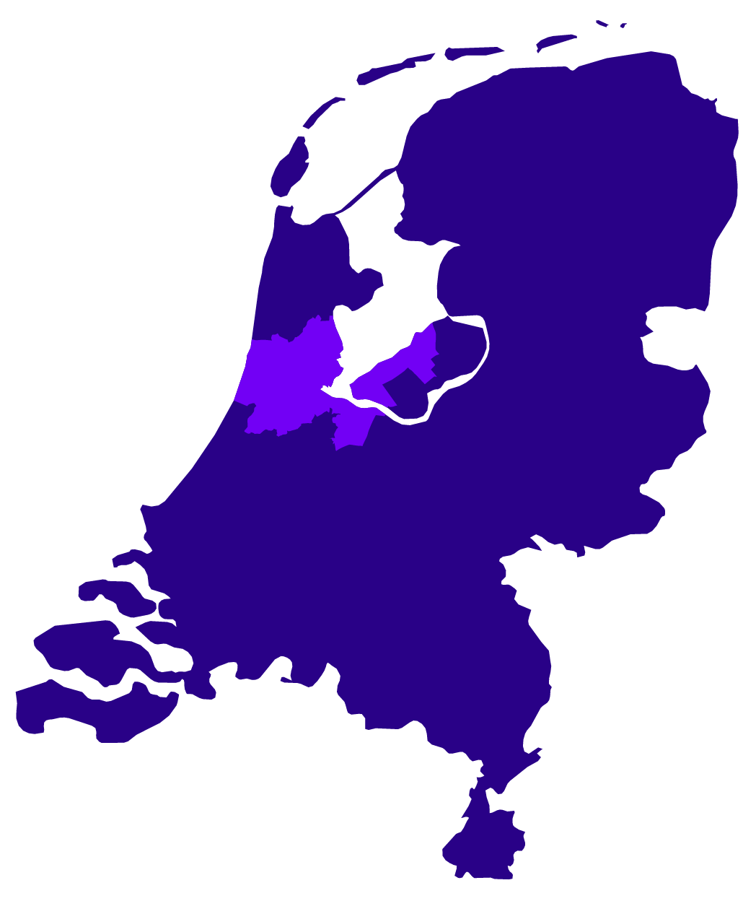

We, Amsterdam,
are on our way
to become a circular
city by 2050!
But we need your help. We want your feedback and your participation in reaching our goals.


But we need your help. We want your feedback and your participation in reaching our goals.
Please read the message on the touchscreen.
We also need your help and feedback!
Get involved with the future of your city
This is why we need a change
That's the same weight as
67 MSC Splendida cruise ships.
Food waste is estimated to be 30% worldwide, and 20% in the Netherlands. Specifically for meat and dairy, the waste percentages are 10% and 8%, respectively.
We consume 12.4kt every year, the same as the total weight of the A’DAM Tower

Do you want a future scenario like we showed you before? We want to make it happen, but we also need your help.
Things won't be a smooth journey!